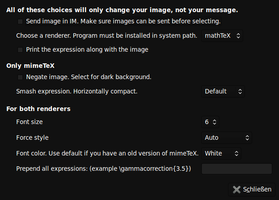
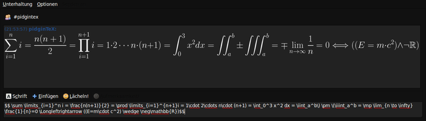

PidginTex
Archivierte Anleitung
Dieser Artikel wurde archiviert, da er - oder Teile daraus - nur noch unter einer älteren Ubuntu-Version nutzbar ist. Diese Anleitung wird vom Wiki-Team weder auf Richtigkeit überprüft noch anderweitig gepflegt. Zusätzlich wurde der Artikel für weitere Änderungen gesperrt.
Zum Verständnis dieses Artikels sind folgende Seiten hilfreich:
pidginTeX  ist ein Plugin für Pidgin, das es erlaubt in einem Chat mit anderen mathematisch zu kommunizieren. Dabei wird zwischen doppelten Dollarzeichen mathematischer LaTeX-Code geschrieben und abgeschickt. Falls der Chatpartner das Plugin ebenfalls installiert hat, sieht er das gerenderte Ergebnis des Codes; falls nicht, sieht er nur den LaTeX-Code.
ist ein Plugin für Pidgin, das es erlaubt in einem Chat mit anderen mathematisch zu kommunizieren. Dabei wird zwischen doppelten Dollarzeichen mathematischer LaTeX-Code geschrieben und abgeschickt. Falls der Chatpartner das Plugin ebenfalls installiert hat, sieht er das gerenderte Ergebnis des Codes; falls nicht, sieht er nur den LaTeX-Code.
Daneben gibt es auch noch das Plugin pidgin-LaTeX , allerdings stellt dieses weniger Einstellungsmöglichkeiten bereit und ist daher weniger empfehlenswert.
Gallerie¶
|  |
| pidginTeX ist hochkonfigurierbar. |
|  |
| Dieses Beispiel zeigt, dass pidginTeX auch wunderbar mit dunklem GTK-Design anwendbar ist. |
Installation¶
pidginTeX ist nicht in den offiziellen Paketquellen enthalten. Deshalb muss man es selber kompilieren. Dazu werden folgende Pakete[1] benötigt:
pidgin
pidgin-dev
libpurple-dev
texlive-base (siehe TeX Live)
mathtex
 mit apturl
mit apturl
Paketliste zum Kopieren:
sudo apt-get install pidgin pidgin-dev libpurple-dev texlive-base mathtex
sudo aptitude install pidgin pidgin-dev libpurple-dev texlive-base mathtex
Zunächst lädt man sich die aktuelle Quellcode-Version unter pidgintex/downloads/list  herunter. Das geht mit dem Browser oder mit
herunter. Das geht mit dem Browser oder mit wget:
# Link der neuesten Version entsprechend anpassen... wget http://pidgintex.googlecode.com/files/pidginTeX-1.1.1.tar.gz
Dann entpackt[2] man das heruntergeladene Archiv und kompiliert[3] es. Danach kann man noch das heruntergeladen Archiv (im HOME-Verzeichnis) und den daraus entpackten Ordner löschen. Wenn man möchte, kann man die jetzt nicht mehr benötigten -dev-Pakete deinstallieren.
Einrichtung¶
Um das Plugin zu aktivieren, startet man Pidgin,  -klickt auf den Menüpunkt "Werkzeuge" und wählt "Plugins". In dem sich öffnenden Fenster setzt man ein Häkchen bei "pidginTeX". Das Plugin muss noch derart konfiguriert werden, dass "mathtex" zum Rendern genutzt wird (falls man nicht "mimetex" verwenden will).
-klickt auf den Menüpunkt "Werkzeuge" und wählt "Plugins". In dem sich öffnenden Fenster setzt man ein Häkchen bei "pidginTeX". Das Plugin muss noch derart konfiguriert werden, dass "mathtex" zum Rendern genutzt wird (falls man nicht "mimetex" verwenden will).
Benutzung¶
In $$-Tags gesendeter und empfangener LaTeX-Code wird auf dem eigenen Rechner als Bild in den Chat eingefügt. Hat der Chat-Partner das Plugin nicht installiert, wird bei ihm anstatt des Bilds nur der LaTeX-Code angezeigt.
- Erstellt mit Inyoka
-
 2004 – 2017 ubuntuusers.de • Einige Rechte vorbehalten
2004 – 2017 ubuntuusers.de • Einige Rechte vorbehalten
Lizenz • Kontakt • Datenschutz • Impressum • Serverstatus -
Serverhousing gespendet von